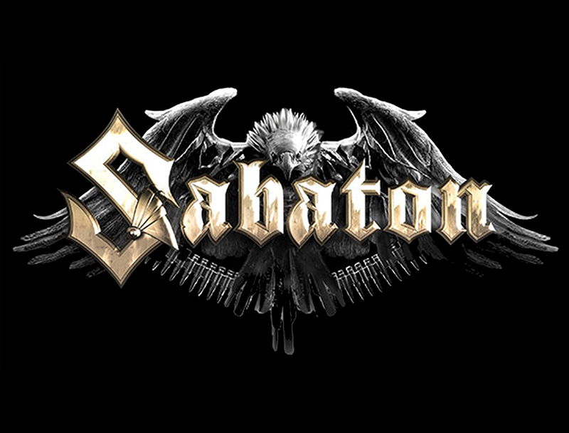

Sabaton - popis
Sabaton je švédská power metalová kapela, která vznikla v roce 1999. Kapela se proslavila písněmi s historickou tematikou, hlavně o bitvách a vojenských událostech. Hudba Sabatonu kombinuje energický rockový zvuk s chytlavými refrény a často využívá vojenské motivy a instrumentální přestávky. Fanoušci oceňují především živá vystoupení, která často obsahují velké scény, pyrotechniku a rekvizity jako tanky nebo vlajky. Díky tomuto stylu si Sabaton získal fanoušky po celém světě a stali se pravidelnými hosty velkých festivalů.
Kapela má několik dobře známých alb jako 'Primo Victoria', 'The Last Stand' nebo 'The Great War'. Texty jsou často založené na skutečných historických událostech a kapela při jejich tvorbě spolupracuje s historiky nebo využívá archivní zdroje. Sabaton také pořádá akce pro fanoušky a má dokonce vlastní muzeum věnované historii kapely a válečné tematice. Posluchači díky písním mohou získat zájem o historii a dozvědět se o událostech, které by jinak neznali. Tato stránka shrnuje základní informace a nabízí odkazy na další části webu.
Důležité informace
- Vznik: 1999 ve Švédsku
- Styl: Power metal
- Témata: Války a historie
- Známá alba: Primo Victoria, The Great War
- Živá vystoupení: velká scéna a efekty